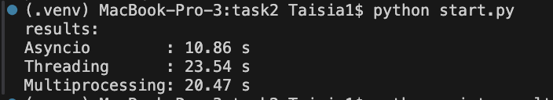

task2
Задача 2: Параллельный парсинг веб-страниц с сохранением в базу данных
Цель:
Исследовать эффективность параллельного парсинга веб-страниц с использованием трёх подходов: threading, multiprocessing и asyncio, с последующим сохранением заголовков страниц в базу данных.
Описание задачи:
- Создан список URL-адресов (
urls.py) - Для каждого URL выполняется запрос, извлекается заголовок страницы и сохраняется в SQLite-базу (
parsed.db) - Реализовано три версии парсера:
- с использованием потоков (
threading_parser.py) - с использованием процессов (
multiprocessing_parser.py) - с использованием асинхронного ввода-вывода (
async_parser.py) - Для извлечения заголовков используется
BeautifulSoup. - Вся логика вынесена в общие модули:
db.py,common.py,models.py.
База данных:
Используется SQLite. Таблица:
ParsedPage(
id INTEGER PRIMARY KEY,
url TEXT,
title TEXT
)
Создаётся автоматически при вызове init_db() из db.py.
Описание реализации:
Асинхронный парсинг (async_parser.py)
Используется aiohttp и asyncio.gather() Все запросы отправляются одновременно Самый быстрый подход для IO-bound задач
Потоки (threading_parser.py)
Каждый URL обрабатывается в отдельном потоке Используется requests для загрузки страниц GIL в Python ограничивает масштабируемость
Процессы (multiprocessing_parser.py)
Каждый процесс независимо обрабатывает URL Отдельная память, обходит GIL Эффективен, но требует большего времени на создание процессов
ID | URL | Title
------------------------------------------------------------------------------------------
1 | https://www.allrecipes.com | Allrecipes | Recipes, How-Tos, Videos and More
2 | https://www.imdb.com | IMDb: Ratings, Reviews, and Where to Watch the Best Movies &
3 | https://www.webmd.com | WebMD - Better information. Better health.
4 | https://www.wikipedia.org | Wikipedia
5 | https://www.wikipedia.org | Wikipedia
6 | https://www.webmd.com | WebMD - Better information. Better health.
7 | https://www.allrecipes.com | Allrecipes | Recipes, How-Tos, Videos and More
8 | https://www.imdb.com | IMDb: Ratings, Reviews, and Where to Watch the Best Movies &
9 | https://www.wikipedia.org | Wikipedia
10 | https://www.webmd.com | WebMD - Better information. Better health.
11 | https://www.allrecipes.com | Allrecipes | Recipes, How-Tos, Videos and More
12 | https://www.imdb.com | IMDb: Ratings, Reviews, and Where to Watch the Best Movies &
Результаты:
